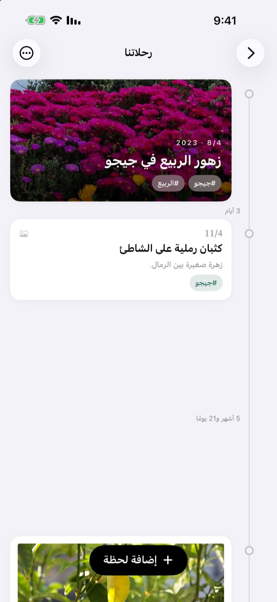
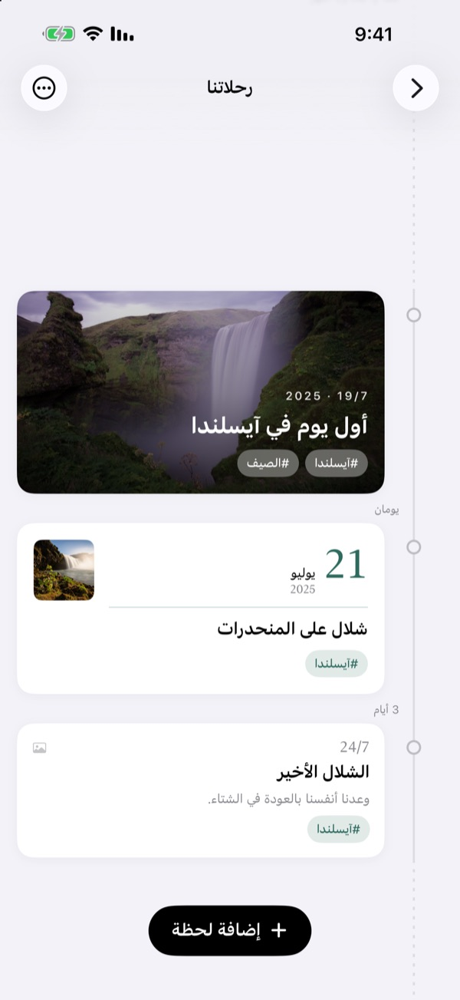
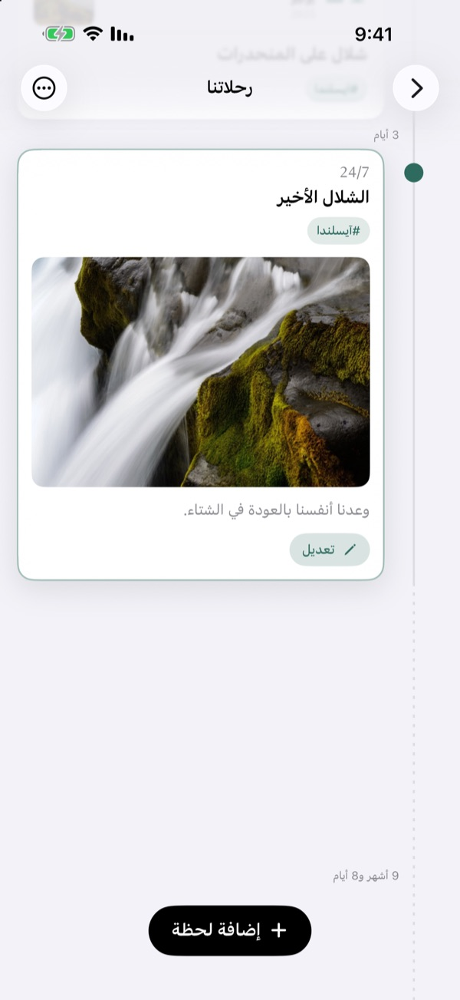
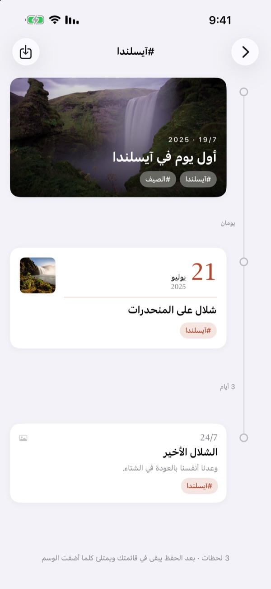
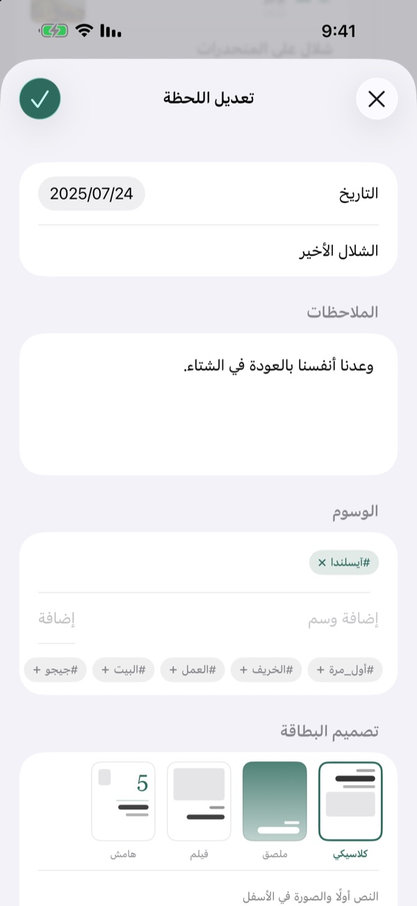

خط زمني
يتمدد مع الوقت
ثلاثة أيام وخمسة أيام تتباعد بنسبة 3 إلى 5. والفترة الطويلة مثل سنتين وأربعة أشهر تُطوى في خط منقّط. يكفي أن تنظر إلى المسافات لتعرف كيف مضى الوقت حقًا.
خطان زمنيان مجانًا، والمزيد مع Plus وPro. لأجهزة iPhone وiPad.

جرّب المسافات بنفسك
كل زر يضيف لحظة جديدة بعد آخر لحظة. وتُرسم المسافات بالقاعدة نفسها التي يستخدمها التطبيق.
ألبوم الصور لا يُريك الوقت
يرتّب ألبوم الصور كل شيء حسب التاريخ، لكن ثلاثة أيام وسنتين تأخذان الخطوة نفسها. أما Yeoul فيباعد بين اللحظات بقدر الوقت الذي يفصلها، فترى بنظرة واحدة أي الفترات كانت مزدحمة وأيها كانت هادئة.
المسافة هي الوقت
مقياس واحد يمتد على الخط الزمني كله، فالفترة نفسها لها الطول نفسه في أي مكان على الشاشة. وتحمل كل مسافة مدتها الحقيقية، مثل «3 أيام» أو «5 أشهر و21 يومًا».
اللحظات المتقاربة جدًا تحصل على مساحة صغيرة رغم ذلك، والفجوات الطويلة جدًا تُطوى في خط منقّط.

يجد صور ذلك اليوم
حدد تاريخ اللحظة واضغط «البحث عن صور ذات صلة» لترى ما التقطته في ذلك اليوم. لم تجد ما يناسبك؟ اضغط «تصفّح» واختر صورة بنفسك.
اضغط على أي لحظة في الخط الزمني لتنفتح صورتها وقصتها في مكانها.

وسم واحد يجمع اللحظات المتفرقة
ضع على لحظاتك وسمًا مثل «#آيسلندا»، ثم اضغط عليه لتجتمع كل اللحظات التي تحمله، من كل خطوطك الزمنية، في خط زمني جديد.
احفظه ليبقى في قائمتك، ويمتلئ باللحظات الجديدة كلما أضفت الوسم.

بطاقة تليق بكل لحظة
كلاسيكي يقدّم النص أولًا. ملصق يملأ البطاقة بصورتك. فيلم يؤطرها كصورة مطبوعة. هامش يمنح التاريخ الكبير الصدارة. وتتغير المعاينة فور اختيارك.

ثلاث خطوات للبدء
- 1
أنشئ خطًا زمنيًا
سنة طفلك الأولى، أو علاقة، أو رحلة. امنح كل واحد اسمًا ولونًا.
- 2
أضف لحظات
اكتب التاريخ والعنوان، ثم أضف صورة من ذلك اليوم.
- 3
ضع الوسوم
اللحظات التي تحمل الوسم نفسه تجتمع من كل الخطوط الزمنية.
أربعة تصاميم للبطاقات
- كلاسيكي
- النص أولًا والصورة في الأسفل.
- ملصق
- الصورة تملأ البطاقة وفوقها عنوان كبير. وإن لم تكن هناك صورة، تمتلئ بلون الخط الزمني.
- فيلم
- صورة بإطار كالصور المطبوعة، مع نص بخط الآلة الكاتبة وختم التاريخ.
- هامش
- رقم التاريخ الكبير في الصدارة والصورة صغيرة. النص هو البطل.
تبدأ اللحظة الجديدة بتصميم آخر بطاقة في ذلك الخط الزمني.
ابدأ مجانًا
مجاني
- خطان زمنيان، لكل منهما اسم ولون
- لحظات وصور وقصص بلا حدود
- البحث عن الصور التي التقطتها في ذلك اليوم
- التصفح حسب الوسم
- تصميما البطاقة كلاسيكي وملصق
- التصدير كنص
Plus وPro
- Plus: خطوط زمنية بلا حدود، وحفظ خطوط الوسوم الزمنية، وتصاميم البطاقات الأربعة كلها
- Pro: كل ما في Plus، مع المزامنة عبر iCloud والتسجيل عبر Siri والاختصارات
- اختر اشتراكًا أسبوعيًا أو شهريًا أو سنويًا، أو اشترِ مرة واحدة مدى الحياة
دعم المطوّر لا يفتح أي ميزة. أرسله من الإعدادات فقط إن رغبت.
بلا إعلانات.
أسئلة
لماذا تختلف المسافات بين اللحظات؟
يباعد Yeoul بين اللحظات بقدر الوقت الذي مضى فعلًا بينها. كل المسافات بمقياس واحد، لذا تتباعد ثلاثة أيام وخمسة أيام بنسبة 3 إلى 5. اللحظات المتقاربة جدًا تحصل على مسافة دنيا كي لا تتداخل، والفجوات الطويلة جدًا تُطوى في خط منقّط يُكتب عليه مدتها الحقيقية، مثل سنتان و4 أشهر.
لا تظهر صور ذلك اليوم.
البحث عن الصور حسب التاريخ يحتاج إلى إذن الوصول إلى مكتبتك. افتح الإعدادات ثم Yeoul ثم الصور واسمح بالوصول. يبحث Yeoul عن الصور الملتقطة من منتصف الليل إلى منتصف الليل في ذلك اليوم، حسب المنطقة الزمنية لجهازك. وإن لم ترغب في منح الإذن، اضغط «تصفّح» أسفلها مباشرة واختر من مكتبتك.
ما خط الوسم الزمني؟
اضغط على وسم في أي لحظة، فيجمع Yeoul كل اللحظات التي تحمله من جميع خطوطك الزمنية في خط واحد. احفظ ما تعود إليه كثيرًا ليبقى في قائمتك. لا يُنسخ شيء: عدّل اللحظة الأصلية فيظهر التعديل هنا أيضًا، وحذف خط الوسم الزمني يترك اللحظات في أماكنها.
لماذا لا يمكنني إضافة لحظات إلى خط الوسم الزمني؟
خط الوسم الزمني عرض يجمع اللحظات حسب الوسم، وليس حاوية، فلا يمكن معرفة الخط الزمني الذي تنتمي إليه اللحظة الجديدة. أضف اللحظة إلى خطها الزمني، وضع عليها الوسم، وستظهر هنا تلقائيًا.
هل يمكنني التسجيل دون فتح التطبيق؟
نعم. استخدم «تسجيل لحظة» في تطبيق الاختصارات أو مع Siri، واختر الخط الزمني والعنوان فقط. إن لم تحدد تاريخًا، تُحفظ بالوقت الحالي. التسجيل عبر Siri والاختصارات من ميزات Pro.
هل أرى خطوطي الزمنية على أجهزتي الأخرى؟
نعم، على أي iPhone أو iPad مسجّل في iCloud بحساب Apple نفسه. تأكد من تشغيل iCloud في الإعدادات ثم حساب Apple ثم iCloud. قد تستغرق التغييرات لحظات للوصول حسب اتصالك. المزامنة عبر iCloud من ميزات Pro، وفي المجاني وPlus تبقى سجلاتك على ذلك الجهاز.
كيف أحذف سجلاتي؟
اسحب الخط الزمني في القائمة لإظهار زر الحذف، أو اضغط «تعديل». حذف الخط الزمني يحذف اللحظات التي فيه أيضًا. ولمسح ما تبقى في iCloud، افتح الإعدادات ثم حساب Apple ثم iCloud ثم إدارة التخزين.
هل يرى المطوّر سجلاتي؟
لا. تُحفظ سجلاتك وصورك على أجهزتك وفي حساب iCloud الخاص بك فقط، ولا يستطيع المطوّر رؤيتها. التفاصيل في سياسة الخصوصية أدناه.
كيف أبلغ عن خطأ أو أقترح ميزة؟
يمكنك الإرسال مباشرة من الإعدادات داخل التطبيق، أو بالبريد، أو عبر Instagram على @lee25_ios. ذكر طراز جهازك وإصدار iOS وما حدث يساعدنا على الحل أسرع.
لأي سؤال أو ملاحظة، راسلنا على leeo@kakao.com.